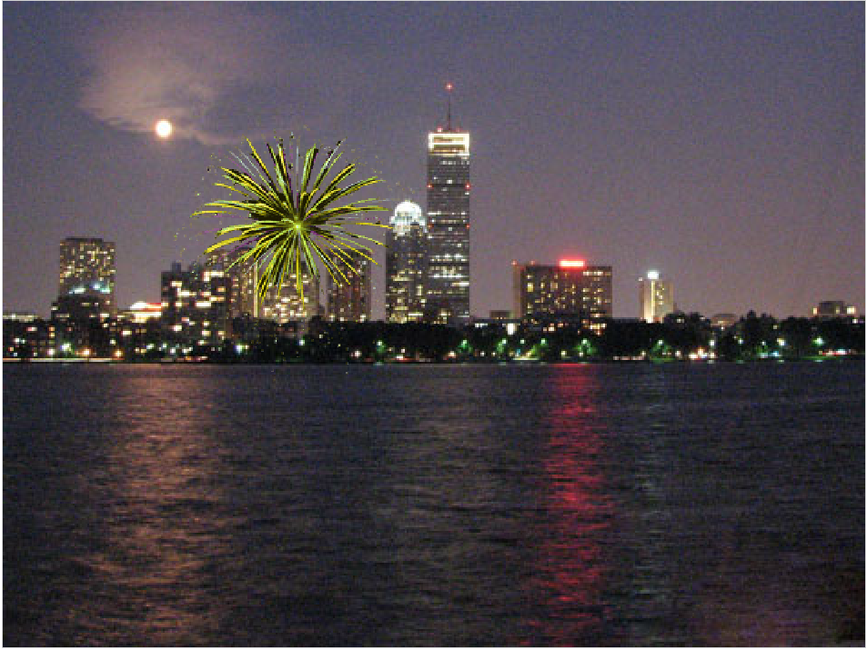
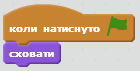
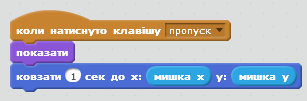
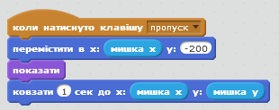
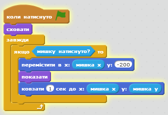
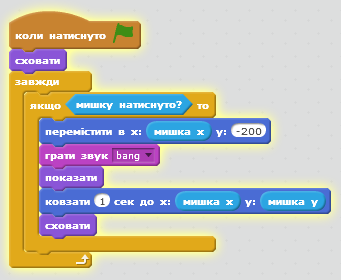
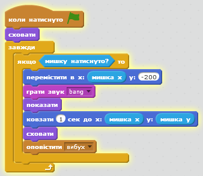
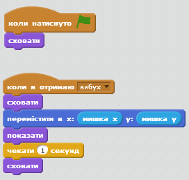
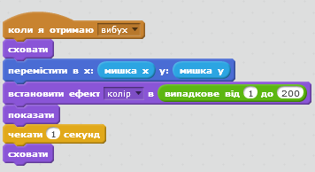
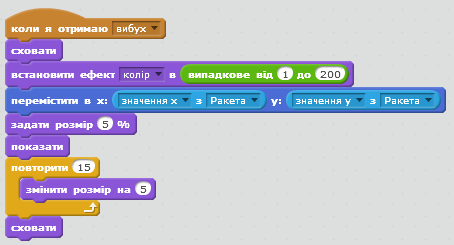

Передмова:
У цьому проекті ми створимо феєрверки над містом.

Крок 1: Створення Ракети, що летить за рухом мишки.
Завдання для виконання
- Створи новий проект у Скретч. Видали кота, клікнувши правою кнопкою мишки і натиснувши "Вилучити".
- Зміни фон на буль-яке нічне місто. Вибери об'єкт сцени, потім на вкладці "Тло" обери з бібліотеки готових фонів "Поза приміщенням"/city-with-water).
- За допомогою кнопки "новий спрайт з файлу" додай в проект об'єкт Ракети (Resources/ Rocket.png). Перейменуй цей об'єкт на "Ракета".
- Подбайте про те, щоб при натисканні зеленого прапорця, ракети не було видно.

- Тепер потрібно зробити так, щоб ракета плавно рухалась (команда ковзати) за мишкою.
Додай блок "коли натиснуто клавішу пропуск" і під ним пропиши команди для появи ракети та її руху в напрямку рухів мишкою:

Протестуй свій проект
Натисни на значок із зеленим прапорцем, помісти мишку над сценою і натисни пробіл.
Чи з'являється ракета? Чи летить вона в те місце, де був курсор? Що відбувається, коли ти рухаєш мишкою і знову натискаєш пробіл?
Завдання для виконання
- Феєрверк не повинен літати з боку в бік, тож треба переконатись, що він завжди слідує за рухом мишки із нижньої частини екрану. Перед тим, як вивести ракету, скористайся блоком "переміститись в", задавши йому команду рухатись під низ екрану, але залишатись у тому ж місці в горизонтальному положенні.

Збережи свій проект.
Протестуй свій проект
Натисни на значок із зеленим прапорцем, помісти мишку над сценою і натисни пробіл.
Чи летить ракета за мишкою з нижньої частини екрану? Що відбувається, коли ти рухаєш мишкою і знову натискаєш пробіл?
Завдання для виконання
- А тепер зміни проект так, щоб ракета стартувала не при натисканні пробілу, а при натисканні кнопки мишки. Для цього слід прописати у скрипті "завжди якщо мишку натиснуто?", замінити блок "при натисканні клавіші пропуск" на коли натиснуто зелений прапорець і переконатись, що ракети не видно, коли проект запускається.

Збережи свій проект.
Протестуй свій проект
Натисни на значок із зеленим прапорцем і натисніть кнопку мишки, помістивши її над сценою. Знову натисніть у іншому місці.
Спробуй зробити так, щоб:
1) перед тим, як почати плавно рухатись за мишкою, ракета трохи вигиналась дугою.
2) деякі ракети рухались трохи повільніше або швидше, ніж інші.
Крок 2: Поява ефекту вибуху для ракети.
Завдання для виконання
- По-перше, для створення ефекту вибуху необхідний характерний звук("бах!",Bang ). Імпортуй звук вибуху із вкладки Звуки. А потім допиши скрипт ракети так, щоб на початку руху вона відтворювала цей звук.

- Потім подбай про те, щоб ракета повідомляла, що вона вибухнула. Пізніше ми прослухаємо це повідомлення (тобто відслідкуємо його в програмі).

Збережи свій проект.
Протестуй свій проект
Натисни на значок із зеленим прапорцем. Переконайся, що ракета видає звук і зникає, коли досягає курсора.
Завдання для виконання
- Імпортуй об'єкт феєрверку з папки Resources/firework1.png. Перейменуй його на "Вибух феєрверка".
- Після отримання повідомлення про вибух він повинен щезнути, а потім перемістившись на місце ракети за допомогою команди "переміститись в", знову з'явитись і через секунду зникнути.

Збережи свій проект.
Протестуй свій проект
Запусти ще раз ракету. Чи з'являється графіка вибуху, коли ракета вибухає? Що відбувається, коли ти утримуєш натиснутою кнопку мишки, одночасно рухаючи її? (Не хвилюйся, зараз ми це виправимо).
Крок 3: Кожен вибух стає різним.
Завдання для виконання
- За допомогою команди "встановити ефект колір" та команди "вибрати випадкове" - вибираємо випадковий колір від 1 до 200 перед появою кожного вибуху.

Протестуй свій проект
Натисни на значок із зеленим прапорцем
Чи відрізняється графіка вибуху кожної ракети?
Завдання для виконання
- Зрештою, створимо ефект наростання вибуху, а не просто його появи. Замість команди "чекати 1 сек", пропиши команду зміни розмірів спрайту (обєкта) до його появи "встановити розмір на 5%", а потім, коли він знову з'являється, команду збільшення його розміру за допомогою "змінити розмір на 5".

Протестуй свій проект
Натисни на значок із зеленим прапорцем
Графіка вибуху розширюється від центру ракети і повільно наростає?
Спробуй:
Чому б не зробити вибухи ще різноманітнішими, змінивши їх розміри та швидкість наростання вибухів?
Збережи свій проект.
Молодець, створення базової гри завершено, але ще деякі речі, які можна зробити у грі. Спробуй виконати ці бонусні завдання!
Бонусне завдання: додайте більше феєрверків у гру.
Завдання для виконання
- У об'єкта Вибух на вкладці Образи - додай більше спрайтів-малюнків феєрверку.
- Додай в скрипт вибуху зміну образа кожного разу, коли феєрверк вибухає.
Збережи свій проект.
Молодець! Проект завершено, тепер можна насолоджуватись грою!